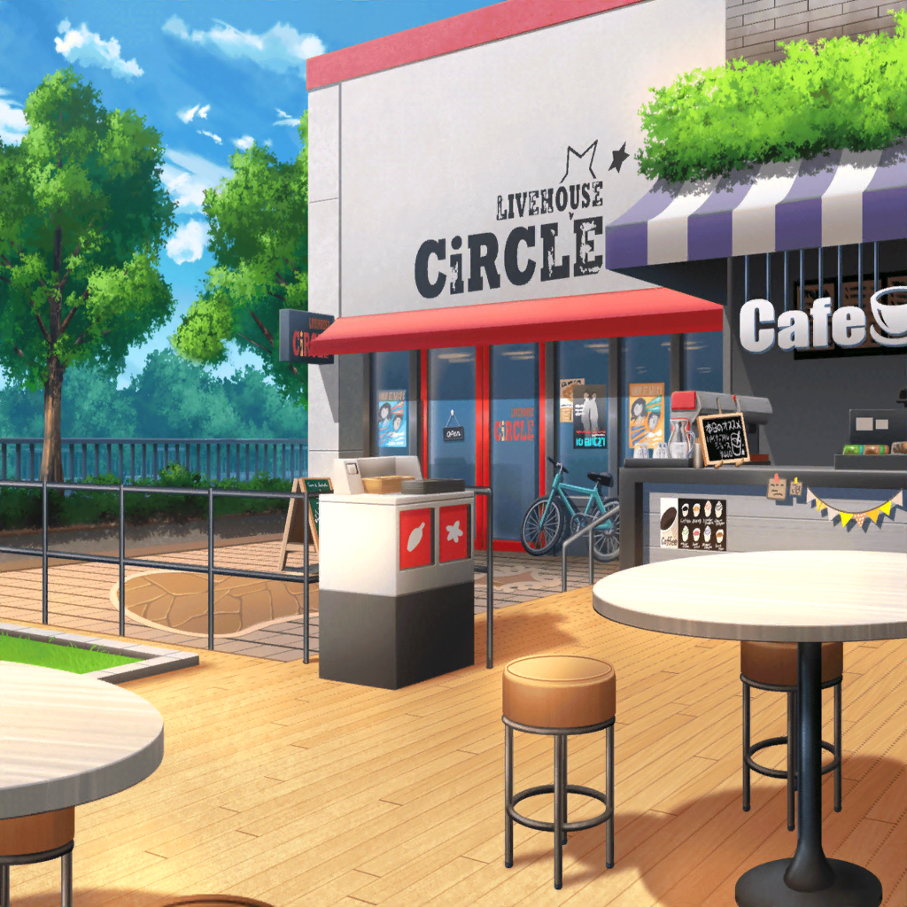

CiRCLE カフェ
イヴ
こんにちは、{{userName}}さん！
イヴ
はい、さっき練習が終わったところです
イヴ
そうですね、久しぶりかもしれません！
実はちょっと前まで、
無人島にテレビ番組の収録に行ってたんです
イヴ
初めてのことだったので大変でしたが、
とても楽しかったです！
イヴ
みなさんの新しい一面を、
見つけることができたような気がします！
イヴ
印象に残っているのは……
やっぱりマヤさんですね！
イヴ
すっごく頼もしかったんです！
イヴ
食べ物を取りに行った時も、
道に迷わないような工夫をしてくれたり
イヴ
ほとんど何も道具がない状態で、
方角を調べてくれたりしたんです！
イヴ
元々、頼りがいがあると思っていましたが、
改めて、マヤさんの魅力を知ることができました！
イヴ
はい！ みなさんと一緒に何かをするのは、
とっても楽しかったです！
イヴ
今度旅行にも行きたいね、ってアヤさんとも
話してました！
イヴ
それに、そうですね……
今回の無人島での体験はとっても勉強になりました！
イヴ
ああいう場所では、何が役に立つかわからないですし、
何か起きた時にも、諦めないで冷静に判断することの
大切さを学びました！
イヴ
心の強さ、セーシンリョクが必要だとわかりました！
そうです！ ブシドーと一緒なんです！
イヴ
ですから、私も、何が起きても、
冷静に判断できるようになろう、と思いました！
イヴ
ライブは、特に勉強になりますし、
CiRCLEでは、多くの時間を過ごすことになると思います！
イヴ
なので何か気づくことがあれば、
いろいろ教えてください、{{userName}}さん！